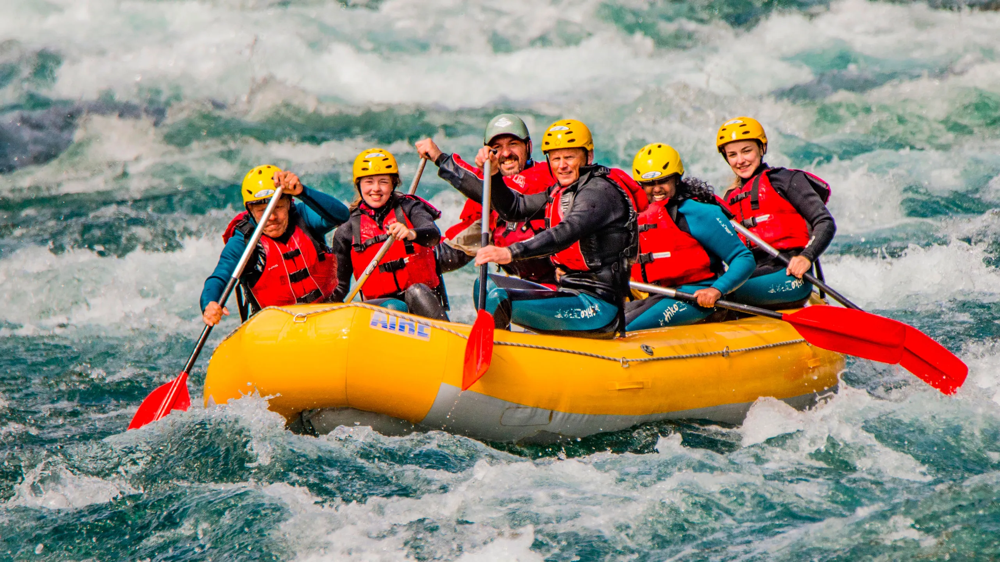
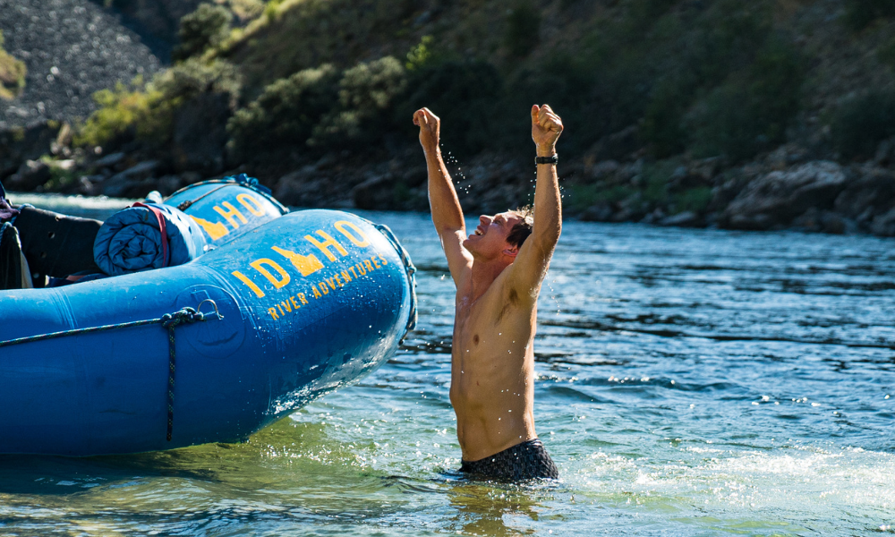
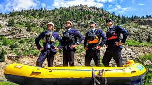

Our Purpose: To provide exhilarating whitewater adventures and foster a deep connection with nature through unforgettable rafting experiences. Our Mission: To provide safe, thrilling, and memorable whitewater rafting experiences while promoting environmental stewardship and fostering a passion for outdoor adventure.


CR Green Rafting
History
Nestled within the verdant landscapes of Costa Rica, CR Green Rafting stands as a beacon of adventure and environmental stewardship.
With a passion for thrilling whitewater experiences and a commitment to preserving the country's natural wonders, CR Green Rafting invites adventurers to embark on unforgettable journeys down the rushing rivers of Costa Rica. Guided by expert navigators, guests paddle through breathtaking gorges and lush rainforests, forging unforgettable memories while fostering a deep appreciation for the pristine beauty that surrounds them.
